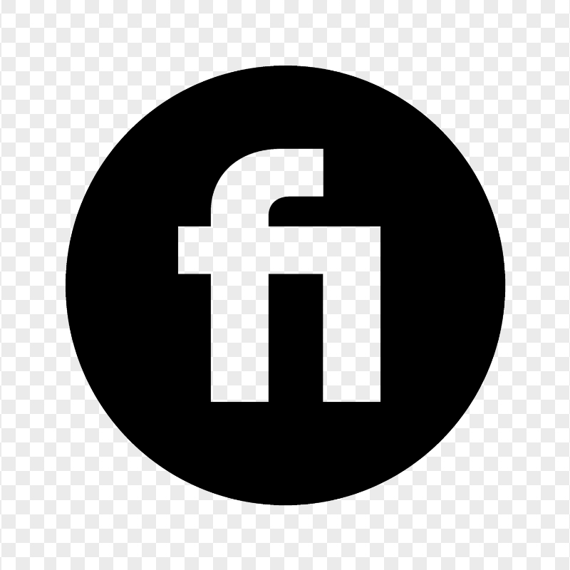

01
Craft Over Trend
Trends expire. Craft endures. Every font is designed with permanence in mind — built to hold its character across decades, not just seasons.
Glyphere
From Glyph to Identity
Type designer and visual craftsman specialising in custom font design, logo typography, and premium digital typefaces. Every letterform I create is drawn with intention — balancing historical awareness with modern precision to build typefaces that outlast trends.
Based in Pakistan, working globally. I believe typography is the foundation of visual identity — it's not just letters, it's the voice your brand wears.
Trends expire. Craft endures. Every font is designed with permanence in mind — built to hold its character across decades, not just seasons.
Every bezier point is placed with purpose. Spacing, kerning, and hinting are not afterthoughts — they are the invisible architecture of legibility.
A typeface should carry a brand through its evolution. I draw from historical typographic traditions while pushing into modern expression.
Hover over a letterform to reveal its skeleton, bezier anchor coordinates, and metrics grid. Use the controls below to morph their weight and slant in real-time.
0+
Typefaces Created
0+
Happy Clients
0+
Glyphs Crafted
0★
Google Rating
Verified, rated, and trusted by clients worldwide. Connect with me directly on the platform you prefer.
Upwork
Delivering professional custom font design, calligraphy, and brand typography to global clients. Recognised as a Top Rated freelancer — Upwork's mark of sustained quality and client satisfaction.

Fiverr
Custom typefaces, display fonts, handwriting fonts, and logo typography — crafted to order. A Level 2 Seller badge earned through consistent delivery, top reviews, and client trust built gig by gig.
Whether you need a custom typeface, a brand identity refresh, or just want to talk type — I'd love to hear from you.